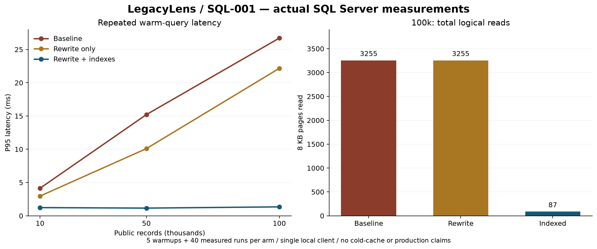

真正 SQL Server 查詢計畫、Logical Reads 與重複計時；每方案 5 次預熱＋40 次實測。

| 方案 | P50 ms | P95 ms | Logical Reads |
|---|---|---|---|
| baseline | 22.3420 | 26.7085 | 3,255 |
| rewrite-only | 16.8213 | 22.1663 | 3,255 |
| indexed | 1.0832 | 1.3413 | 87 |
暖快取、單一本機 client；結果等價檢查 offsets 0 / 20 / 200。非 SLA 或企業導入效益。原始資料：docs/benchmarks/100000/results.json。